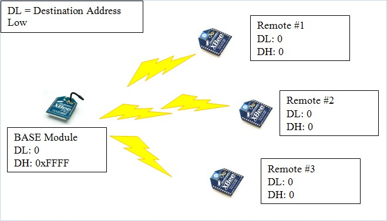
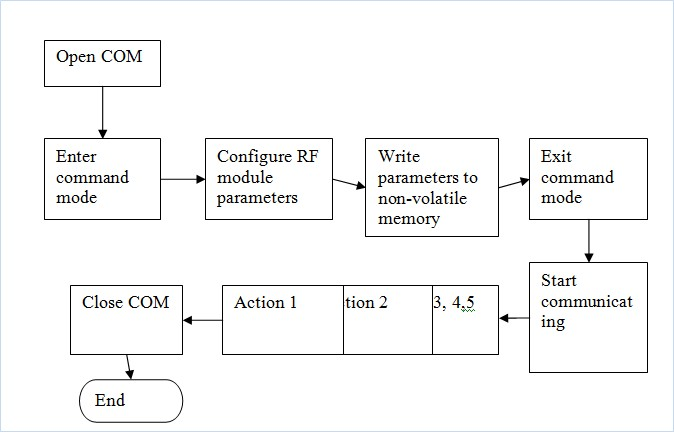

9.3 ZigBee Application Example and Programming
Zigbee Application:-9.3.1 Point-to-Multipoint Topology
Demo the Zigbee module (BASE) able to communicate with Remote modules, monitoring remote I/O device and control remote I/O devices.
Point-to-multipoint topologies require that one BASE module be configured to operate in Broadcast Mode. REMOTE modules can operate either in Broadcast or Unicast Mode.
To configure the module, there are some BASIC COMMAND needs to be understood:-
| NO# | COMMAND | DESCRIPTION | REMARK |
| 1 | ATWR | Write parameters into non-volatile memory | |
| 2 | ATDL | GET/SET low 32-bits address of 64-bits destination address. | Default:0x0000FFFF |
| 3 | ATDH | GET/SET high 32-bits address of 64-bits destination address. | Default: 0 |
| 4 | ATDL | Read low 32-bit module of unique IEEE 64-bit Address. | Read only. |
| 5 | ATDH | Read high 32-bit module of unique IEEE 64-bit Address. | Read only. |
| 6 | ATID | GET/SET user network address ID. | Range: 0x0000-0xFFFF. Nodes must have same network to communicate. |
| 7 | ATNI | GET/SET node string identifier. The String only accepts readable ASCII data. | Up to 20 characters. |
| 8 | ATND | Nodes discovery. | The format is:- Channel<CR> SH<CR> SL<CR> NI<CR> PARENT NETWORK ADDRESS<CR> DEVICE TYPE<CR> STATUS<CR> PROFILE_ID<CR> MANUFACTURER_ID<CR> <CR> |
| 9 | ATCH | GET/SET module channel ID used for transmitting and receiving data between RF modules. | Range:- XBEE: 0x0B-0x1A XBEE-PRO: 0x0C-0x17 |
| 10 | ATCE | GET/SET the nodes router. 0- Router: a node of this type will act as a router in the network. 1- N/A 2- End-Device: Nodes of this will not router data for other nodes or relay broadcast. | Default: 0 |
Understand the application program flow:-
1) Attach Zigbee RF module to embedded PC.
2) Create the program that may open Serial Port to communicate with the ZigbeeRF module.
3) Updating the Zigbee RF module parameters, configure the Zigbee RF modules which match with the Application scenario.
4) The parameters are:-
- SL
- SH
- DL
- DH
- NETWORK ID
- ROUTER

Remark: If you found the lost of the wireless signal, you may configure another Zigbee RF module as a broadcast router; act as wireless repeater to extend the Zigbee network.